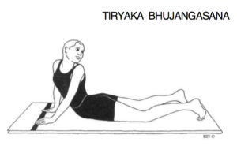
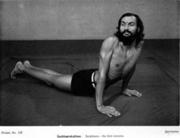
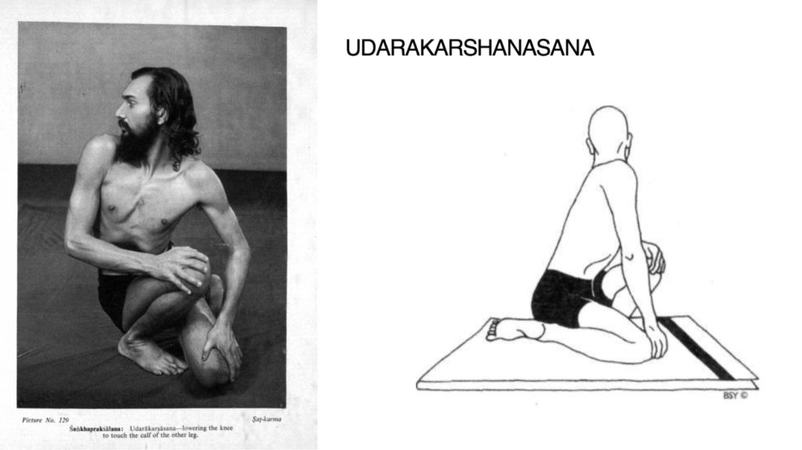
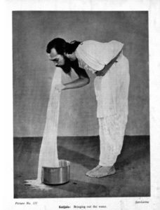

The Haṭhasaṅketacandrikā
and the Practice of Śaṅkhaprakṣālana (Yogic Cleaning of the Conch).
One of the texts we have proposed to work on for the Haṭha Yoga Project is the Haṭhasaṅketacandrikā by Sundaradeva, a Brahmin living in Varanasi in the eighteenth century. The colophons of this work identify him as an āyurvedic physician (vaidya) and various catalogues report that he wrote works on Āyurveda, such as the Bhūpālavallabha (or Bhūpacaryā), the Cikitsāsundara, the Līlāvatī, the Yogoktivivekacandra and Yogoktyupadeśāṃrta.
The Haṭhasaṅketacandrikā is a voluminous compendium on yoga (probably over three thousand verses in length) that integrates teachings on Haṭha and Rājayoga with those of the Pātañjalayogaśāstra, the Mahābhārata, the Yogavāsiṣṭha and various Purāṇas, Tantras and Upaniṣads.
Mark Singleton and I are currently working on a preliminary edition of the Haṭhasaṅketacandrikā’s section on Āsana, which contains interesting discussions on Āsanas that purify the Nāḍīs and alleviate fever, undigested food (āma), pain, vāta-pitta-kapha imbalances and so on. It also describes some Āsanas that are not found in other yoga texts and several Prāṇāyāma practices in non-seated positions, which are also to be found in the Baḥr al-Ḥayāt. An illustrated manuscript of this Persian work was commissioned at the beginning of the seventeenth century by Prince Salīm, who later became the Mughal ruler Jahangir. Therefore, we can assume that many of the yoga practices known to Sundaradeva must have been prevalent enough in north India to have come to the attention of the Mughal elite.
When reading the section on the six therapeutic techniques (ṣaṭkarma) in the Haṭhasaṅketacandrikā, I came across a description of a practice called Śaṅkhaprakṣālana. It reads as follows:
Now the [therapeutic] technique called Śaṅkhaprakṣālana [is described]. Having taken in water through a nostril, the wise yogin should expel it through the mouth, or having taken in water through one nostril, he gradually discharges it through the other nostril. This auspicious [practice called] Śaṅkhaprakṣālana removes diseases caused by [excess] phlegm and bile, cures diseases located above the collarbones and gives divine sight. Thus, [the description of] the technique Śaṅkhaprakṣālana.1
This is the only premodern description of Śaṅkhaprakṣālana known to me, and it differs markedly from the modern practice by this name, which has been popularised by the teachings of Swami Satyananda (1923 – 2009) and the Bihar School of Yoga. In his book Asana Pranayama Mudra Bandha, Satyananda (1996: 489 – first published in 1969) explains that the word śaṅkha means conch and is “intended to represent and describe the intestines with their cavernous and coiled shape.” However, in the eighteenth-century description by Sundaradeva, it appears that the conch represents the sinuses, with its openings being the nostrils and/or mouth through which the water is poured and discharged.
Satyananda’s description of Śaṅkhaprakṣālana involves drinking large quantities of warm salt water and then performing five Āsanas, which push the water through the intestines before it is excreted from the rectum. Immediately after this, one performs Kuñjal Kriyā, which is the practice of drinking salt water and vomiting it up (similar to Gajakaraṇī in medieval yoga texts). This is followed by a special diet and rest.
Satyananda’s book is not the oldest published account of this type of Śaṅkhaprakṣālana. A very similar practice by the same name is described by Dhirendra Brahmachari (1924 – 94) in his Yaugik Sūkṣm Vyāyām (“Yogic Subtle Exercise”), which was first published in Hindi in 1956 (some thirteen years prior to Satyananda’s publication). Dhirendra explains the name Śaṅkhaprakṣālana in the same way as Satyananda. He says a conch has a circuitous path (cakrākār mārg) through it, and just as water poured in one end comes out the other, so water taken into the mouth can whirl through the body and cleanse it of impurities, before it comes out the rectum.

Tiryak Bhujaṅgāsana.
Asana Pranayama Mudra Bandha 1996: 199.

Dhirendra Brahmacari in Sarpāsana.
Yogic Suksma Vyayama, 1965: picture 126.
The most striking similarity between the Śaṅkhaprakṣālana of Dhirendra and that of Satyananda is the special Āsanas that are prescribed. These are:
| Dhirendra (1956: 208) | Satyananda (1996: 484) |
| Tāḍāsana (1) | |
| Sarpāsana (1) | Tiryak Bhujaṅgāsana (4) |
| Ūrdhvahastottānāsana (2) | Tiryak Tāḍāsana (2) |
| Kaṭicakrāsana (3) | Kaṭicakrāsana (3) |
| Udarākarṣāsana (4) | Udarākarṣanāsana (5) |
Of these, Kaṭicakrāsana and Udarākarṣāsana are the same in name and form, whereas Dhirendra’s Sarpāsana and Ūrdhvahastottānāsana are the same in form (but with different names) as Satyananda’s Tiryak Bhujaṅgāsana and Tiryak Tāḍāsana respectively. The only other differences are that Satyānanda begins his sequence (denoted by the numbers in round brackets) with Tāḍāsana and he changes the order slightly by placing the snake pose (Sarpāsana/Tiryak Bhujaṅgāsana) after Kaṭicakrāsana.

[L] Dhirendra in Udarākarṣāsana. Yogic Suksma Vyayama 1965: picture 129.
[R] Udarākarṣāsana. Asana Pranayama Mudra Bandha 1996: 72.
Both Dhirendra and Satyananda stipulate that one should drink copious amounts of warm salt water and perform Kuñjal Kriyā immediately after Śaṅkhaprakṣālana. Also, they offer similar precautions and dietary advice, and quote the same verse from the Gheraṇḍasaṃhitā (1.18) in pointing out that the traditional name for this practice was Vārisāra.

Dhirendra, Kuñjal Kriyā.
Yogic Sukshma Vyayama, 1965: picture 111.
The main differences between these two accounts of Śaṅkhaprakṣālana is that Satyananda’s description contains more detailed information on the precautions, food restrictions, the effects of each Āsana on the digestive tract and the benefits of the practice.
Interestingly, Dhirendra (1965: 200) also quotes an eighteenth-century Hindi work called the Aṣṭāṅg Yog Varṇan, in which its author Caraṇdās (1703 – 82) is instructed by his guru Śukadev on the eight auxiliaries of yoga. One of its verses (271) mentions Śaṅkhaprakṣālana (saṅkhprakhāl) as an additional practice to the Ṣaṭkarma.2 Caraṇdās does not describe Śaṅkhaprakṣālana and so he may have been referring to the practice of the same name in the Haṭhasaṅketacandrikā.
Dhirendra (1956: cha) states that he met his guru Maharshi Kartikeya in a village called Benipatti, which is in north Bihar. Satyananda based himself in Bihar after he left Swami Sivananda in 1956, although he continued to wander as a mendicant (Aveling 1994: 60). Therefore, it is possible that he came in contact with Dhirendra or Maharshi Kartikeya. It is even more likely that he would have seen the Hindi edition of Dhirendra’s book, which was published at this time (1956). This would explain the similarities between Dhirendra’s and Satyananda’s teachings, which include other Ṣaṭkarmas (e.g., Dugdh Neti, Ghṛt Neti, Kuñjal and Bāghī/Vyāghra Kriyā) and some Āsanas (e.g., neck, wrist and ankle rotations) that are not found, as far as I am aware, in other contemporary Indian publications on yoga.
Further research is needed to determine whether Satyananda learnt some of his yoga praxis from Dhirendra. The textual evidence does suggest the existence of an interesting style of physical yoga in north Bihar in the mid-twentieth century. Should this prove to be so, it would extend our understanding of the influence Dhirendra has had on modern yoga, both within and outside of India. For not only was he the teacher of Jawaharlal Nehru and Indira Gandhi, but he also taught Harbhajan Singh Puri, popularly known as Yogi Bhajan, who attended Dhirendra’s yoga classes in New Delhi in the 1960s and went on to found Kundalini Yoga in America (Deslippe 2012: 373).3
Notes
1. Haṭhasaṅketacandrikā G p. 50, J f. 26v.
atha śaṅkhaprakṣālanākhyaṃ karma ||
nāsāpuṭena salilaṃ paripīya vaktramārgeṇa tad bahir †aho† kalayet sudhīraḥ |
pītvaikakena puṭakena ca nāsikāyā anyena vāri śanakair bahir udvamed vā ||29||
śaṅkhaprakṣālanam idaṃ kaphapittagadāpaham |
jatrūrdhvagatarogaghnaṃ divyadṛṣṭakaraṃ śubham ||30||
iti saṅkhaprakṣālanaṃ karma ||
29a paripīya ] J : paripīthya G. 29d śanakair ] J : śanakai G. 30c jatrūrdhva ] conj. : jantūrdhva G, J.
2. Aṣṭāṅg Yog Varṇan 271.
kapālabhānti aru dhauṅkanī, bāghī śaṅkh pakhāl |
cāri karm ye aur haiṃ, inhiṃ chahauṃ ke nāl ||271||
3. I would like to thank Philip Deslippe at the University of California Santa Barbara, Swami Saradananda (a student of Swami Vishnudevananda) and Reinhard Gammenthaler (a student of Dhirendra Brahmacari) for answering my questions on Dhirendra and Satyananda. Reinhard believes that Satyananda was never a student of Dhirendra or Maharishi Kartikeya (p.c. 26.9.2016). Thank you to Jacqueline Hargreaves for her help with the images.
Bibliography
Primary
Aṣṭāṅg Yog Varṇan
Aṣṭāṅg Yoga by Saint Charandasa (Translation in English by Om Prakash Tiwari). Lonavla: Kaivalyadhama, 1983.
Haṭhasaṅketacandrikā
(G) ms. R3239 (transcript) at the Government Oriental Manuscripts Library, Madras University.
(J) ms. No. 2244 at the Man Singh Pustak Prakash Library, Jodhpur.
Secondary
Aveling, H. (1994). The laughing swamis: Australian sannyasin disciples of Swami Satyananda Saraswati and Osho Rajneesh. Delhi: Motilal Banarsidass Publishers.
Deslippe, Philip (2012) “From Maharaj to Mahan Tantric”, Sikh Formations, 8:3, 369-387, DOI: 10.1080/17448727.2012.745303.
Dhirendra Brahmacari (1956) Yaugik Sūkṣm Vyāyām (Dhīrendra Brahmacarī). New Delhi: Dhīrendr Yog Prakāśan.
Satyananda, S. (1996 3rd Revised Edition). Asana Pranayama Mudra Bandha. Bihar School of Yoga. Munger: Bihar School of Yoga.